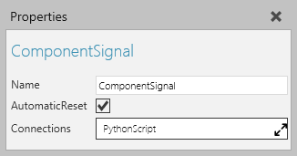

A Component Signal allows you to signal a value which is a component.

| Name | Description |
| Name | Defines the name of the signal. |
| AutomaticReset | Defines if the signal is reset to its initial value when you reset a simulation. A True value resets the signal. A False value does not reset the signal. |
| Connections | Defines a list of behaviors that are connected to the signal and reference it as a trigger. Generally, a signal is connected to a Python Script in order to notify the script whenever the signal's value changes during a simulation. |